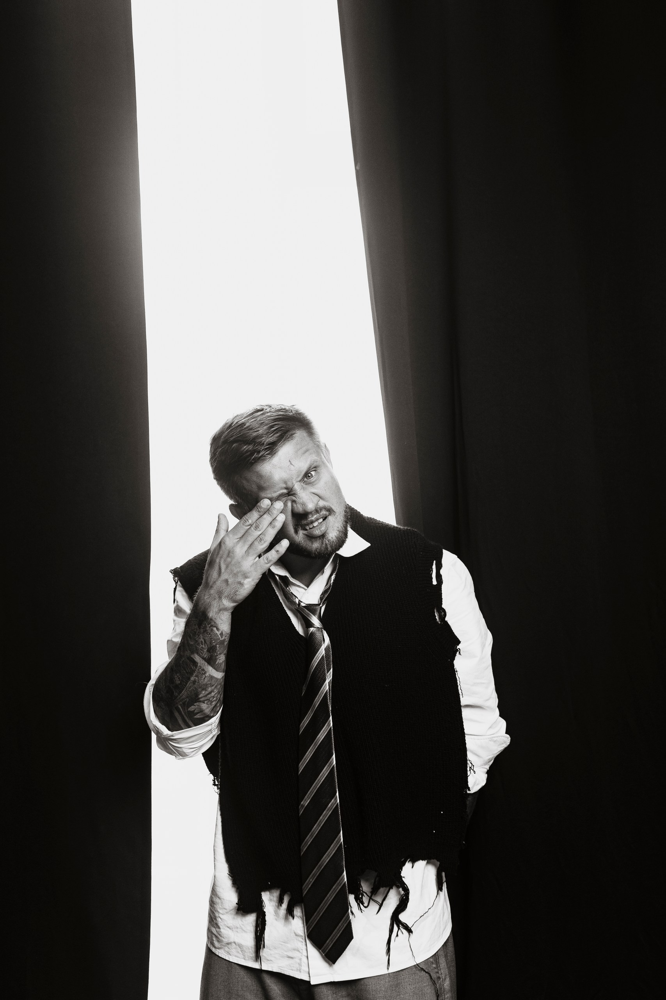

Меня зовут Сергей Воробьев. Делаю ИИ-инструменты для российского бизнеса. Здесь · про то, во что я верю, как пришёл в эту работу и что у меня сейчас на руках.

Я делаю ИИ-системы, которые приносят бизнесу деньги. С 2023 года. За это время прошло больше пятидесяти проектов · от голосовых ассистентов для общепита до операционных систем фулфилмент-складов.
Моё место на рынке · на стыке двух языков. С одной стороны · язык предпринимателя: маржа, OPEX, скорость, простой кадра, потерянные сделки. С другой · язык технологии: модели, агенты, интеграции, MLOps. Большинство ИИ-консультантов говорит на одном из двух. Я перевожу с языка боли клиента на язык точного решения и обратно.
Три года я собирал такие системы руками · по одной, под конкретный бизнес. Полсотни штук. Потом заметил, что решаю одну и ту же задачу заново, и собрал из этого продукт. Сейчас он называется OpenCowork, и это мой главный фокус. Руками я тоже продолжаю · там, где коробка не ложится.
В начале 2023 года меня позвали в Skillbox как методиста писать логику курса по ИИ. До этого я десять лет занимался не технологиями, а обучением: вожатый, методист в Орлёнке и Сириусе, преподаватель в Китае, разработчик образовательных программ.
На этом проекте я обнаружил странную вещь. Проектирование ИИ-агента и проектирование обучающей программы · это одна и та же работа. Чтобы агент работал хорошо, ему нужно объяснить контекст так же, как объясняешь его новому сотруднику: какая роль, какие правила, какие ограничения, какие сценарии, как реагировать на нештатное.
Я зашёл в ИИ с той стороны, с которой в него обычно не заходят. Не от кода · а от умения объяснять, выстраивать логики и проектировать поведение. Тот человек, который тогда позвал меня в Skillbox, через год сам ушёл строить ИИ-направление. Я пошёл по той же дороге, но с другой стороны.
У меня был кейс, где мы технически решили задачу автоматической проверки экологических отчётов. Технология работала. Но при честном подсчёте оказалось, что содержать двух специалистов руками в моменте дешевле, чем обслуживать систему. Бизнес отказался · и был прав. С тех пор я считаю экономику до того, как пишу код.
На складе можно поставить жёсткую защиту: нельзя списать больше, чем есть на остатке. На практике это сразу ломается: поставщик прислал 515 шт вместо 500, и упаковщик честно работает с фактом. Лучше уйти в минус, но мгновенно уведомить менеджера. Защита превращается из стенки в детектор. Этот принцип я применяю везде: не запрещать, но видеть.
На крупных проектах одна и та же система обслуживает три-четыре пользовательские роли, и у каждой свои задачи и язык. Упаковщик хочет ясную работу и видимый заработок. Менеджер · видимость операций и контроль аномалий. Владелец · биллинг и масштаб. Делать «универсальный интерфейс для всех» · значит проиграть всем. Я делаю разные интерфейсы поверх одного доменного ядра.
У меня был проект, где мы спроектировали голосовую систему для торговой сети. Технология была. Деньги были. Команда была. Не нашлось специализированного железа, которое требовалось для развёртывания в нужном масштабе. Проект остановился. С тех пор в каждой оценке у меня есть отдельная строка · «риск инфраструктуры». Не только «можем ли мы это сделать», но и «существуют ли в природе компоненты, на которые мы рассчитываем».
Привёз первую делегацию русских детей в Крым · под Департаментом культуры Москвы и Московской области. Руководителем организационной группы, в условиях, когда менялась власть, не было ни базы, ни инфраструктуры, ни стабильного руководства. Координировал работу вожатых, художников, звуковиков, всю бытовую логистику · чтобы детям было комфортно, несмотря на хаос вокруг. Этот опыт научил собирать работающий процесс из ничего. Сейчас этот навык в моих ИИ-проектах не меньше, чем педагогический.
Восемь лет жил и работал в Китае. Преподавал, потом строил бизнес на маркетплейсах. Главный урок Китая · системы важнее людей. Когда границы закрываются, поставки рвутся, локдауны опечатывают подъезды металлом, выживают те, у кого процессы выстроены так, что не зависят от настроения одного человека. Я перенёс эту логику в работу с ИИ.
Один раз я потерял груз стоимостью 25 миллионов рублей. Это был мой бизнес, мои деньги, мой кризис. После этого я перестроил все процессы так, чтобы важная информация всегда была в системе, а не в голове конкретного человека. Это и есть моя личная мотивация к автоматизации · я уже знаю, что бывает, когда её нет.